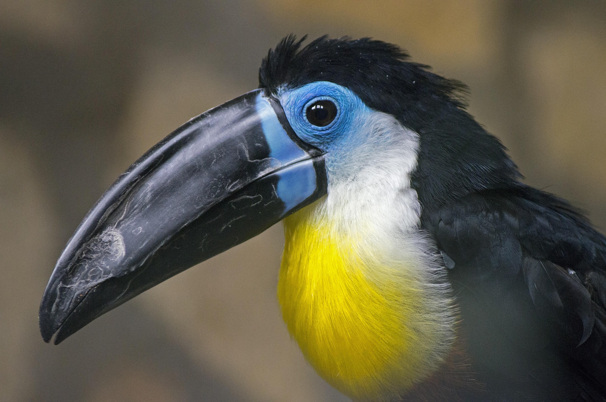

O tucano é uma ave tropical conhecida por seu bico grande e colorido. Ele é encontrado principalmente nas florestas tropicais da América do Sul, onde se alimenta de frutas, insetos e pequenos animais. O tucano é um símbolo da biodiversidade e da beleza da natureza, e é frequentemente associado a ambientes tropicais exuberantes.